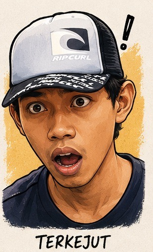

Lo tau buah ini? Kalau jawaban lo "zucchini" — lo salah, dan lo bukan yang pertama. Gw udah sering dapet reaksi yang sama tiap kali orang ngeliat Labu Botol di kebun Villa Ciracas: pada melongo, terus nanya, "Itu apaan?"
Nama kerennya Bottle Gourd, atau dalam bahasa kampung: Labu Botol, Labur Air, kadang juga disebut Labu Kuwit tergantung daerahnya. Bentuknya memang mirip zucchini — panjang, hijau, licin — tapi beda spesies, beda karakter, dan beda ceritanya.
Ini adalah eksperimen gw. Dan hasilnya? Diluar ekspektasi.
1. Kenapa Labu Botol? Bukan Zucchini, Bukan Labu Siam
Jujur, awalnya gw milih ini bukan karena tahu banyak soal Labu Botol. Gw pilih karena satu alasan sederhana: penasaran.
Gw udah coba beberapa tanaman di lahan 150m² ini — mulai dari kangkung, bayam, sampai tomat cherry. Tapi ada satu kategori yang belum gw sentuh: buah-buahan yang bentuknya "aneh" tapi punya nilai gizi tinggi. Labu Botol masuk kategori itu.
Yang bikin gw tertarik: ini tanaman yang sebenernya udah ada lama di kuliner Indonesia — dimasak sayur bening, disantan, atau dimakan mentah sebagai lalapan di beberapa daerah. Tapi jarang banget ada yang nanemnya sendiri, apalagi di lahan kota.
2. Setup Tanam: Lahan Sempit, Strategi Vertikal
Tantangan utama nanem Labu Botol di lahan 150m²: tanaman ini merambat. Kalau dibiarkan horizontal, dia bisa nge-cover area yang luas banget — dan lahan gw nggak punya luxury itu.
Solusinya: vertikal. Gw bikin rambatan dari bambu dan kawat — bentuknya mirip pergola sederhana. Tanaman naik ke atas, buahnya menggantung. Hasilnya lebih rapi, lebih efisien, dan — bonus — jadi estetik juga di sudut kebun.
Benih ditanam langsung ke media tanam (campuran tanah + kompos + sekam). Perkecambahan sekitar 5–7 hari. Setelah 2 minggu mulai muncul sulur — fase ini butuh pengarahan ke rambatan. Buah pertama muncul sekitar 45–60 hari setelah tanam.

"Pas sulur pertama nyampe ke rambatan bambu dan mulai naik sendiri — gw berdiri di pojok kebun sambil mikir, ini momen yang harusnya direkam. Tanaman ini tau arahnya. Tinggal kita bantu jalannya. 🌿"
3. Proses Tumbuh: Fase Demi Fase
Yang paling seru dari Labu Botol itu ritme tumbuhnya. Dia nggak lambat, tapi juga nggak terburu-buru. Ada fase-fase yang jelas dan bisa di-observasi — ini yang bikin berkebun jadi menarik buat gw.
Ada satu hal yang gw pelajari di fase bunga: bunga betina dan bunga jantan tumbuh di tempat berbeda. Kalau polinator alami kurang, perlu polinasi manual — ambil serbuk dari bunga jantan, tempel ke kepala putik bunga betina. Mekanikal banget, tapi efektif.

"Pertama kali ngeliat bunga Labu Botol mekar malem-malem — gw nggak nyangka sebagus itu. Putih bersih, gede, kaya bunga di film-film dokumenter alam. Ternyata ada yang indah juga di kebun Ciracas ini. 🌸"
4. Hasil Panen: Diluar Ekspektasi
Jujur, ekspektasi awal gw rendah. Ini eksperimen pertama dengan tanaman ini, lahan sempit, dan gw belum punya pengalaman khusus soal Cucurbitaceae yang merambat.
Tapi ternyata Labu Botol itu tangguh. Adaptasinya ke kondisi kebun Ciracas lebih cepat dari yang gw prediksi. Buah pertama muncul sesuai jadwal, ukurannya oke, dan nggak ada masalah besar di sepanjang proses.
5. Labu Botol vs Zucchini: Beda Jauh, Bro
Karena pertanyaan ini paling sering dateng, gw mau jelasin sekali buat semua: Labu Botol dan Zucchini itu beda spesies, beda karakter, beda penggunaan.
Labu Botol yang terlalu tua atau pahit mengandung cucurbitacin — senyawa yang bisa bikin mual atau muntah kalau dikonsumsi banyak. Selalu pilih buah yang masih muda (kulit hijau mengkilap) dan cicipin dulu sebelum masak penuh. Kalau rasanya sangat pahit, jangan dikonsumsi.
6. Video: Lihat Langsung Prosesnya

Video proses tanam, tumbuh, sampai panen Labu Botol akan diupload di YouTube Shorts. Subscribe channel Bunker Opanowski biar ga ketinggalan update!
📌 Penutup

"Banyak yang salah kira ini zucchini — padahal ini buah kampung yang udah ada lama di Indonesia. Kadang yang langka itu bukan karena susah ditanem, tapi karena nggak ada yang mau nyoba. 😎"
Eksperimen Labu Botol ini ngajarin satu hal: nggak perlu tanaman impor buat bisa berkebun dengan hasil yang bagus. Ada banyak tanaman lokal yang adaptasinya lebih tinggi, biayanya lebih murah, dan manfaatnya sama besarnya — tinggal berani coba dulu.
Di Villa Ciracas, lahan 150m² bukan hambatan. Itu justru tantangan yang bikin setiap eksperimen lebih bermakna.
Kalau lo juga pengen nanem Labu Botol, mulai dari benih — beli di toko pertanian lokal, atau bahkan dari pasar tradisional. Harganya murah, hasilnya memuaskan.
Tetap autodidak, tetap berkah! 🏴Pernah nanem Labu Botol juga? Share pengalaman lo di kolom komen! 🌿